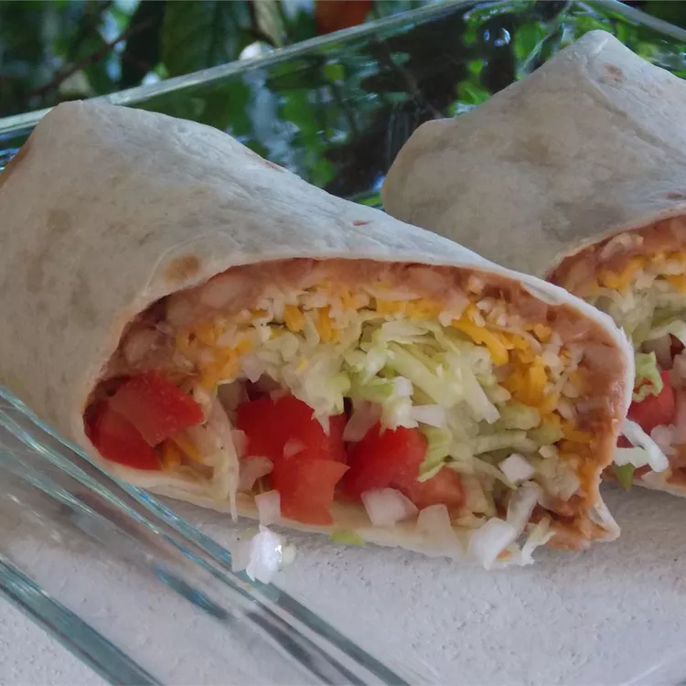

burrito

These beef burritos contain various peppers and seasonings on top of
refried beans.
Top them off with lettuce, sour cream, cheese, and wrap up in a soft
shell.
Ingriedients:
- ½ cup vegetarian refried beans
- 1 large whole-wheat tortilla
- 2 romaine lettuce leaves
- ½ avocado, peeled and sliced
- ¼ cup fresh pico de gallo
Steps:
-
Stir refried beans in a saucepan over medium-low heat until hot, 2 to 4
minutes.
-
Warm tortilla in a skillet over low heat until softened, 1 to 2 minutes.
Transfer tortilla to a plate.
-
Layer lettuce onto tortilla. Spread warmed refried beans, avocado
slices, and pico de gallo on top of lettuce. Roll tortilla around the
fillings into a burrito shape.